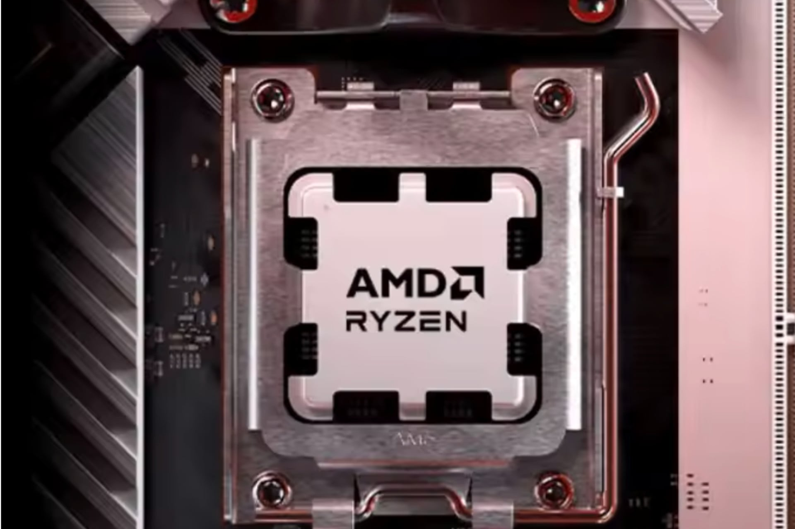

Vendu à -54%, le Ryzen 7 7800X3D n’attend plus que la pâte thermique

🛒 En lien avec cet article
🛒 Voir le prix : ordinateur portable
Publicité — Liens de partenariat Amazon : une commission peut être reversée, sans surcoût pour vous.
🔥 Top produits tech du moment
🛒 Voir le prix : Logitech MX Master 3S
🛒 Voir le prix : Casque Sony WH-1000XM5
Publicité — Liens de partenariat Amazon : une commission peut être reversée, sans surcoût pour vous.
Le matériel et les smartphones restent l'un des secteurs les plus dynamiques de la tech. Les nouveautés se succèdent à un rythme soutenu et les consommateurs attendent toujours plus de performances.
Ce qu'il faut retenir
Le Ryzen 7 7800X3D est le choix le plus pertinent pour quiconque veut monter ou mettre à jour un PC gaming.
En ce moment, son prix chute à un niveau bas historique, à l'occasion de l'opération Zack to School sur AliExpress.
Pourquoi c'est important
Cette information montre à quel point le matériel reste au cœur de l'innovation. Elle concerne directement les utilisateurs de technologies numériques et mérite d'être suivie de près dans les prochaines semaines. Vendu à -54%, le Ryzen 7 7800X3D n’attend plus que la pâte thermique est ainsi un signal à prendre en compte pour comprendre les évolutions du secteur.
En résumé
Retenez l'essentiel : Vendu à -54%, le Ryzen 7 7800X3D n’attend plus que la pâte thermique. Cette actualité a été rapportée par 01net. Nous continuerons de suivre ce sujet et de vous tenir informés des prochaines évolutions.
🚀 Vous êtes freelance tech ?
Calculez votre TJM en 30 secondes : micro-entreprise, SASU, EURL ou portage salarial. Gratuit, taux 2025.
Calculer mon TJM →Source : 01net